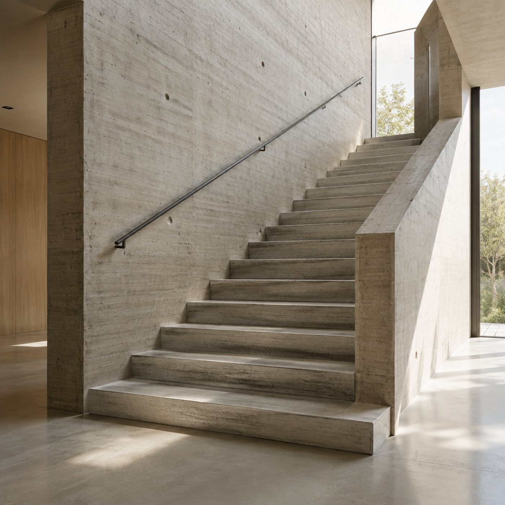

Лестницы из бетона, которые
не скрипят и не двигаются
Монолитные лестницы, террасы и перила из бетона. Проектируем, собираем опалубку, армируем и заливаем на объекте. Опыт в бетоне больше 20 лет: от проёма в частном доме до общественной лестницы.
Три вещи, которые мы
делаем в бетоне
Монолитный бетон — это про геометрию и вес. Мы берём на себя всё: расчёт, опалубку, армирование, заливку и финишную поверхность.
Монолитные лестницы
Прямые, Г- и П-образные, с забежными ступенями. Одна плита с домом: без скрипа, люфта и пустот под ступенями.
Террасы из бетона
Плита на грунте или на сваях, с уклоном от дома, деформационными швами и финишным покрытием под климат.
Перила из бетона
Монолитная стенка или балясины, закладные под поручень. Ограждение, которое не надо крепить в готовую ступень.
Ступени и площадки
Крыльцо, входная группа, уличные марши. Морозостойкий бетон, скруглённые кромки, рифлёная поверхность.
Геометрия по проёму
Работаем от проёма и отметок пола, а не от стандартного шаблона: подъём и проступь подбираем так, чтобы шаг был удобным.
Монолит на объекте
Заливка на месте, вибрирование, уход за бетоном. Без транспортировки готовых ступеней и швов между элементами.
Прикиньте марш
до замера
Подставьте высоту этажа и ширину марша — получите число ступеней, длину марша, объём и вес бетона. Это разговорный ориентир, а не смета: точные цифры появляются после замера.
Число ступеней считается по подъёму около 175 мм, объём бетона — по наклонной плите 120 мм и телам ступеней. Точные размеры, армирование и объём монолита определяем после замера: проём, отметки пола и примыкания решают больше, чем формула.
Отправить расчёт в WhatsAppРазрез марша с подъёмом и проступью. Для Г- и П-образных лестниц добавляется площадка или забежная часть.
Что происходит
внутри ступени
Мы показываем конструктив перед началом работ, чтобы не было сюрпризов после опалубки. Ниже — три типовых узла, которые чаще всего обсуждаем на объекте.
Ступень по грунту
Основание, подушка, тело ступени и защитный слой бетона вокруг арматуры.
Консольная ступень
Ступень выпускается из стены: нужен расчёт вылета и анкеровка в несущую стену.
Бетонные перила
Монолитная стенка с закладной под деревянный или металлический поручень.
Пять шагов
от проёма до прочности
Лестница — не тот элемент, где можно «потом поправить». Поэтому порядок жёсткий и одинаковый на всех объектах.
Смотрим проём, отметки пола, несущие стены. Считаем подъём, проступь, длину марша и объём бетона.
Собираем щиты по геометрии, выставляем по уровню. Опалубка держит вес бетона, поэтому крепление — не экономия.
Каркас с защитным слоем, анкеровка в стены, усиление в местах концентрации нагрузки. Фиксируем до заливки, показываем заказчику.
Бетон с пластификатором, вибрирование, выравнивание, укрытие и влажностный уход: от этого зависит прочность поверхности.
Снимаем опалубку на 7–10 день, полную прочность бетон даёт к 28 дню. Дальше — шлифовка, покрытие, установка поручня.
Что обычно
спрашивают
Коротко и по делу. Если вашего вопроса нет — позвоните, ответим без заготовок.
Сколько стоит лестница из бетона?
Стоимость зависит от типа, ширины марша, объёма бетона и финиша. После замера считаем по объёму работ и материалам, а не «за ступень». Цифру называем до начала, чтобы не было доплат по ходу.
Сколько ждать до момента, когда можно ходить?
Распалубка — на 7–10 день, аккуратно ходить можно примерно через две недели, полную прочность бетон набирает к 28 дню. Тяжёлые нагрузки — после этого срока.
Можно ли залить лестницу в готовом доме?
Да, это основной сценарий. Работаем внутри помещения: закрываем зону, собираем опалубку, заливаем на месте. Пыли меньше, чем кажется, но подготовку проёма обсуждаем заранее.
Чем закрывают бетонные ступени сверху?
Чаще всего оставляют бетон со шлифовкой и пропиткой, кладут керамогранит или дерево на подступенки и проступи. Под каждое покрытие своя подготовка поверхности — решаем на этапе расчёта.
Делаете ли вы перила?
Да, монолитные бетонные перила — отдельное направление. Поручень из дерева или металла ставится на закладные, которые мы оставляем в бетоне.
Пришлите фото проёма — посчитаем
Хватит фотографии проёма и высоты этажа, чтобы назвать вилку по объёму бетона и срокам. Дальше — замер и точный расчёт.